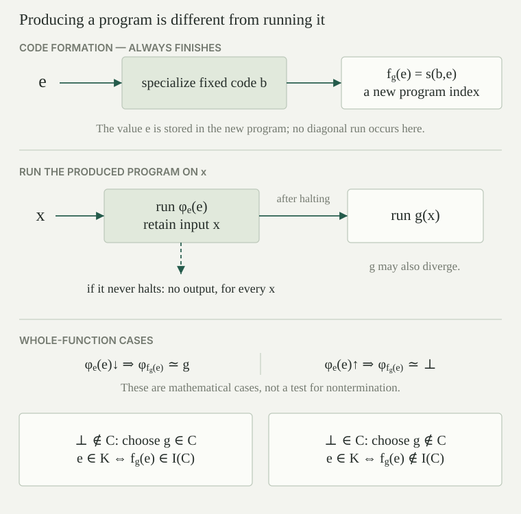

Use the fixed program numbering, with partial function \(\varphi_e:\mathbb N\rightharpoonup\mathbb N\) at index \(e\). Let \(\mathcal R\) be the collection of unary partial recursive functions. A behavioral property is a subset \(\mathcal C\subseteq\mathcal R\). Its index set is
The property is nontrivial when there are \(g,h\in\mathcal R\) with \(g\in\mathcal C\) and \(h\notin\mathcal C\). Equivalently, \(I(\mathcal C)\) is neither empty nor all of \(\mathbb N\), since every partial recursive function has an index.
A set of indices \(A\subseteq\mathbb N\) is extensional when equality of computed partial functions preserves membership:
Here equality means the same definedness and value at every input. An index set \(I(\mathcal C)\) is extensional. Conversely, if \(A\) is extensional, let \(\mathcal C\) consist of the functions computed by indices in \(A\). If \(\varphi_e\) lies in this collection, it agrees with \(\varphi_d\) for some \(d\in A\), so extensionality puts \(e\) in \(A\). Thus \(A=I(\mathcal C)\).
The nowhere-defined function \(\bot:\mathbb N\rightharpoonup\mathbb N\) has empty domain. It is partial recursive: the search \(\bot(x)\simeq\mu t\,[1=0]\) never finds a witness. Consequently it has a program index.
It differs from the constant-zero function \(z(x)=0\). The latter is defined on every input, whereas \(\bot\) is defined on none. This distinction matters even when a property describes only outputs: saying that a computation returns zero requires it to terminate with that output. We do not assign an extra numerical value to divergence.
For every fixed partial recursive function \(g\), there is a total computable function \(f_g:\mathbb N\to\mathbb N\) such that
The transformation can be chosen primitive recursive. Its output is a program index even when \(\varphi_e(e)\) diverges.
Choose an index \(a\) for \(g\). On paired input \(\langle e,x\rangle\), perform the following partial computation \(H_g(e,x)\): run \(\varphi_e(e)\); if it returns any value, discard that value and run \(g(x)\). The first computation uses the partial recursive universal evaluator. Keeping \(x\) alongside the result, then projecting back to \(x\) and running \(g\), uses pairing and strict composition. Thus \(H_g\) is partial recursive jointly in its two inputs. In particular the first evaluation cannot be erased merely because its numerical result is discarded.
Choose an index \(b\) for the unary paired-input function \(\langle e,x\rangle\mapsto H_g(e,x)\), and use the parameter theorem to set
This is the promised map: \(b\) is fixed once \(g\) and its program are fixed, and \(s\) is primitive recursive. Producing \(s(b,e)\) inserts \(e\) into finite program text; it does not execute the waiting instruction.
If \(\varphi_e(e)\) halts, then for every input \(x\) the first stage finishes and the new program has exactly the definedness and value of \(g(x)\). This includes inputs where \(g\) diverges. If \(\varphi_e(e)\) diverges, then the first stage never finishes for any \(x\), and the new program computes \(\bot\). These are equalities of entire partial functions, which proves the claim.
Let \(\mathcal C\subseteq\mathcal R\) be nontrivial, and let \(K=\{e:\varphi_e(e)\downarrow\}\). If \(\bot\notin\mathcal C\), then \(K\le_m I(\mathcal C)\). If \(\bot\in\mathcal C\), then \(K\le_m\bigl(\mathbb N\setminus I(\mathcal C)\bigr)\). In both cases the reduction is the map \(f_g(e)=s(b,e)\) from the waiting construction, with \(g\) chosen on the opposite side of \(\mathcal C\) from \(\bot\).
First suppose \(\bot\notin\mathcal C\). Nontriviality provides a partial recursive \(g\in\mathcal C\). By the waiting construction, a halting input \(e\in K\) produces the function \(g\), so \(f_g(e)\in I(\mathcal C)\). A nonhalting input produces \(\bot\), so \(f_g(e)\notin I(\mathcal C)\). Thus
Now suppose \(\bot\in\mathcal C\). Choose a partial recursive \(g\notin\mathcal C\), again using nontriviality. A halting input now produces a function outside \(\mathcal C\), while a nonhalting input produces a function inside it. Hence
Both maps are total computable, as required by the definition of many-one reduction. The second case reduces to the complement; reversing the final membership answer is not part of a many-one reduction to \(I(\mathcal C)\) itself.

For every nontrivial behavioral property \(\mathcal C\subseteq\mathcal R\), the index set \(I(\mathcal C)\) is undecidable. Equivalently, an extensional set of program indices is decidable if and only if it is empty or all of \(\mathbb N\).
If \(I(\mathcal C)\) were decidable, so would its complement: interchange the two values of a characteristic function. The appropriate reduction in the preceding theorem, together with decidable pullback, would decide \(K\). This contradicts halting undecidability.
For the equivalent formulation, an extensional set is the index set of a behavioral property by the first definition. If it is neither empty nor universal, that property is nontrivial and the result just proved rules out decidability. Empty and universal sets have constant characteristic functions, so both are decidable. This proves both directions.
The set \(D_0=\{e:\varphi_e(0)\downarrow\}\) is c.e. and undecidable. In fact \(K\le_m D_0\), with the waiting construction using the constant-zero function.
The behavioral property is \(\mathcal C_0=\{g\in\mathcal R:g(0)\downarrow\}\). The nowhere-defined function fails it and the constant-zero function satisfies it. Thus the first case of the reduction theorem applies. Its map produces a constant-zero function when the original diagonal computation halts, and a nowhere-defined function otherwise; its new program therefore halts at zero exactly in the first case. Rice’s theorem gives undecidability.
For enumerability, the procedure on input \(e\) simply simulates \(\varphi_e(0)\). It halts exactly on \(D_0\), so its domain is \(D_0\). This is a partial recursive function by specialization of the universal evaluator. The example shows that Rice’s theorem does not assert failure of computable enumerability: a positive answer here can be recognized by waiting for the finite successful computation.
The set \(O_{17}=\{e:\exists x\,[\varphi_e(x)\downarrow=17]\}\) is c.e. and undecidable.
The property of a partial function is that its range contains \(17\). It holds for the constant-\(17\) function and fails for \(\bot\). Both are partial recursive, so Rice’s theorem proves undecidability; the first case of the reduction theorem also gives a reduction using the constant-\(17\) function as the waiting program’s second stage.
To recognize the positive answers, search for a pair \(\langle x,k\rangle\) such that the bounded evaluator has returned \(17\) for program \(e\) on input \(x\) within resource \(k\). This is a primitive-recursive certificate test. Such a pair exists exactly when \(e\in O_{17}\), so the certificate characterization makes \(O_{17}\) c.e. Running input zero to completion, then input one, would not work: a divergent earlier input might prevent reaching an input that returns \(17\). The certificate search gives all inputs a chance.
The totality index set \(\mathrm{Tot}=\{e:\forall x\,\varphi_e(x)\downarrow\}\) is undecidable. The waiting construction with \(g(x)=0\) gives \(K\le_m\mathrm{Tot}\).
Totality depends only on the partial function, including its domain. The constant-zero function is total, whereas \(\bot\) is not total, since it is undefined at zero. These are the two nontriviality witnesses required by Rice’s theorem.
More explicitly, the map from the waiting lemma produces a program computing the total function \(g\) when \(e\in K\), and the nowhere-defined function otherwise. Therefore \(e\in K\) if and only if \(f_g(e)\in\mathrm{Tot}\). This proves the claimed reduction. The quantifier pattern for this property was expressed arithmetically in the totality formula; the present argument proves undecidability from its behavior as a property of functions.
Fix any unary partial recursive function \(h\). Then \(E_h=\{e:\varphi_e\simeq h\}\) is undecidable. Consequently there is no total computable decision procedure which, on every pair of indices \(e,d\), decides whether \(\varphi_e\simeq\varphi_d\).
The class \(\{h\}\) is a behavioral property. It contains a partial recursive function, namely \(h\). It also excludes one: if \(h\not\simeq\bot\), take \(\bot\); if \(h\simeq\bot\), take the constant-zero function, which differs from it at input zero. Thus the property is nontrivial, and Rice’s theorem makes \(E_h\) undecidable, including the case where \(h\) is nowhere defined.
For the second assertion, choose once an index \(d\) for \(h\). A decision procedure for pairs, with this second input fixed, would decide \(E_h\). Fixing a numerical input preserves total computability by specialization, so this would contradict the first assertion.
Let \(A=\{0\}\), the set whose sole member is the index of the \(\mathsf{zero}\) program in our fixed numbering. It is nonempty and not universal. Why does deciding membership in \(A\) not contradict Rice’s theorem?
Equality to the natural number zero is a terminating arithmetic test, so \(A\) is decidable. But it is not extensional. The program \(\mathsf{comp}(\mathsf{zero},\mathsf{zero})\) has code \(6\): the coding rule gives \(4\langle0,0\rangle+6=6\). It computes the same total constant-zero function as code zero, since both evaluations in its strict composition terminate. Nevertheless \(0\in A\) and \(6\notin A\).
Rice’s theorem applies when changing program text without changing the entire partial function cannot change membership. A finite syntactic test need not have that invariance.
Keeping the numbering fixed is also important. The zero-input flag example is a computable listing of all partial recursive functions whose nontrivial semantic halting-at-zero property has a decidable index set. Its missing reverse compiler prevents using that listing as an effective replacement for the standard one.
Suppose we are promised that an input index \(e\) computes a total function. Can we then decide whether \(\varphi_e(0)=0\)? Explain why your answer is compatible with Rice’s theorem.
Yes, on these promised inputs. Run \(\varphi_e(0)\) and return one if the resulting number is zero, and zero otherwise. The promise ensures that this computation terminates. The property is nontrivial even among total functions, since the constant-zero and constant-one functions give opposite answers.
This procedure is partial recursive on arbitrary indices, and need not halt when the promise fails. Rice’s theorem rules out a total computable characteristic function defined on every natural-number index. Its waiting construction uses a nowhere-defined output function in one case, which lies outside the promised class. A decision procedure for promised total programs is therefore a different requirement. Checking the promise itself is impossible by the totality theorem.